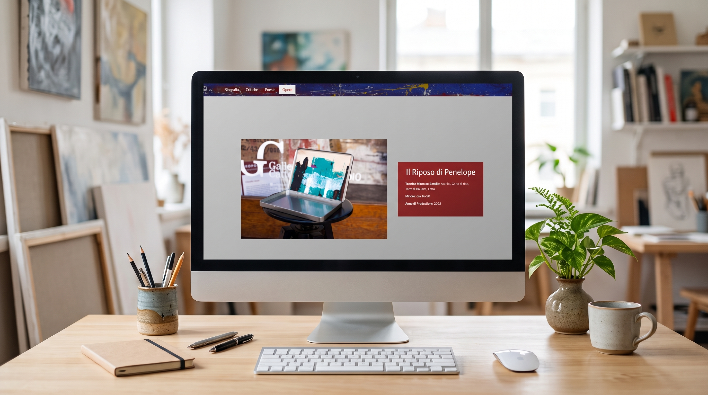
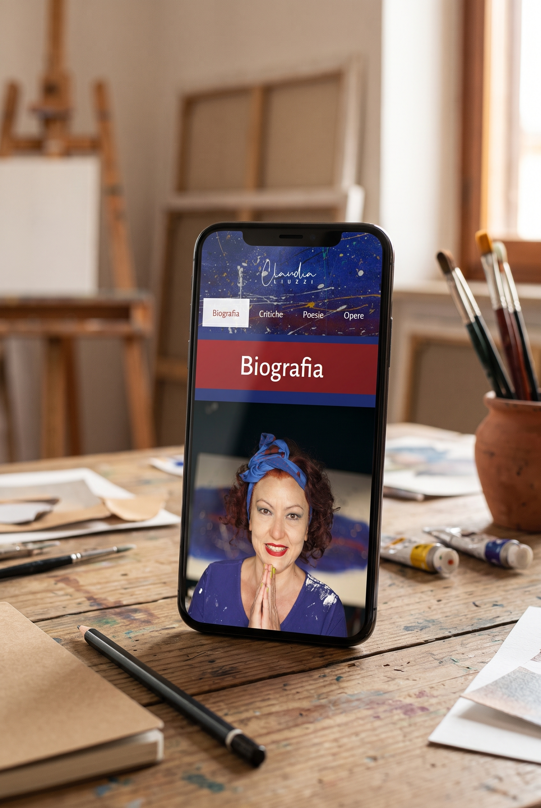
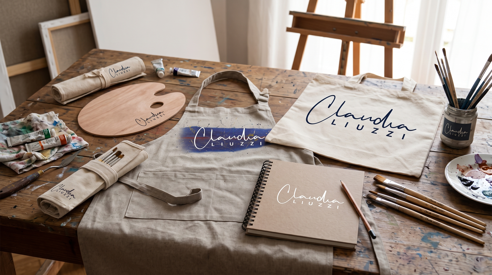
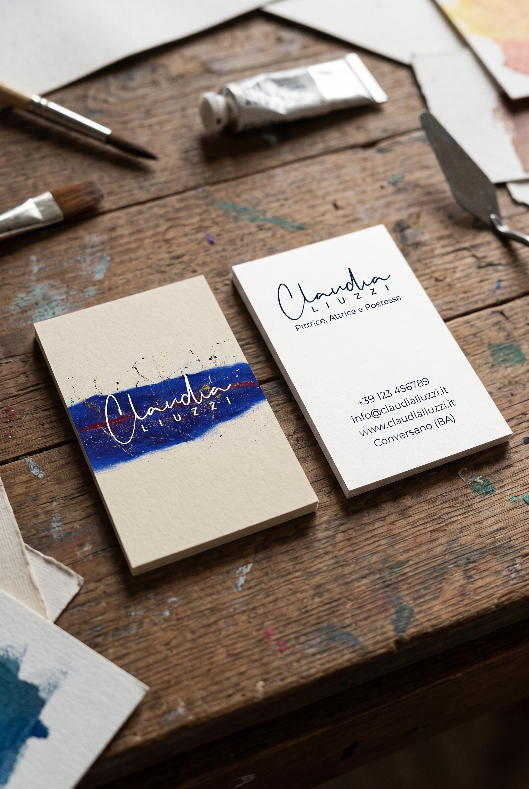
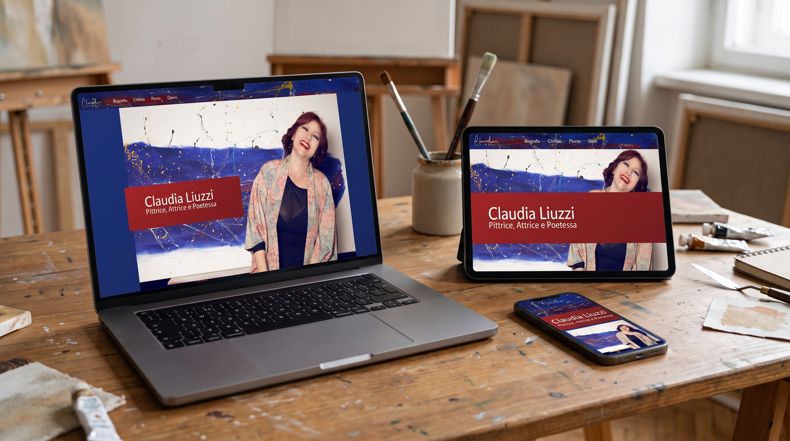

CLAUDIA LIUZZI
Progettazione e sviluppo del sito web e della UI, coordinamento della comunicazione online e creazione di un logotipo esclusivo sviluppato direttamente partendo da un'opera dell'artista.

Una galleria d'arte digitale
Progettare il sito web portfolio, il logotipo e gli stampati personali per una pittrice, attrice e poetessa, raccogliendo in un unico spazio le sue collezioni pittoriche, le poesie e i testi critici.
Non sovrastare le opere
Evitare che l'interfaccia web entrasse in competizione cromatica con i dipinti, trovando al tempo stesso un segno grafico identitario che non sembrasse un font preconfezionato ma rispecchiasse la mano dell'artista.
Dal gesto pittorico al web
Un logotipo calligrafico ricavato direttamente da una pennellata originale dell'artista e un layout web dal taglio museale ed editoriale, dove fondi neutri e accenti rosso carminio guidano l'occhio tra tele e versi.


«La poesia è fonte di nutrimento spirituale e i segni di essa sono depositati nei lavori pittorici quale legame indissolubile tra ineffabilità e materia.»


